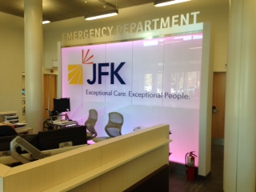
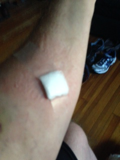
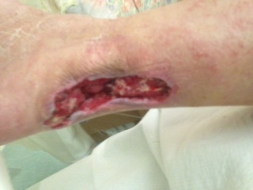
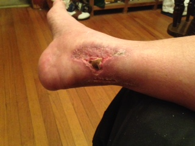
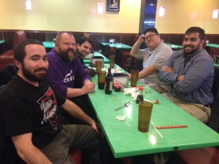
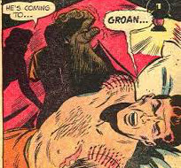
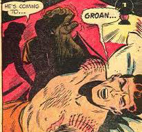

Like a dream sequence... It looks normal from this angle...
The
way the wound is I could not get the guaze to stay on the wound and
wrap it up correctly. Enter Bulwisz. I texted Gary
and with
four hands we were able to wrap it properly. How they expect
people to do this on their own is beyond me. How people in
2016
can call for a nurse visit and not even get a call back is also beyond
me though. Let it be known throughout the land and the humble
kingdom of Metuchen/Edison, Gary Bulwisz of Hickory street (formerly
Maple) is more reliable than JFK at home nursing.
---
Game seven. Time to make some soup and get ready for the
baseball methinks... What a day...
9pm: Just
put in my Vancomycin IV. Tribe just tied it. Now
Cubs have
1st n 2nd w no outs though. 1-1 Game Seven as of 9:10pm...
Ooops,
Cubs up 2-1... Now Zobrist scores, 3-1... Howie is
going
to take me to Dr. Ramasubramani (from here on Dr. Rama... jeez)
tomorrow afternoon so I have that ride to the infectious disease doctor
problem licked! Nurse visit at 9:30am. No rest for
wicked.
Am likely going up after my vanco ball. I do not
think I
have ever cared less about a game seven in my life. Not the
Mets,
not the NFL, not the Islanders, who cares. I'm in ther dining
room putzing around on the computer with this blog and other stuff,
just have the TV on in the living room.
These new Vanco balls are massive...
Now 5-1... Goodbye Goat... Tribe choked. Loser club vs loser
club and the Tribe was worse. Meh.
Howie came over and brought coffee. Still in dining room....
Until the Davis HR...
Then the rain delay... but still a Tribe loss, and still meh...
Lets get to April and start this over, shall we?
By April I might be walking and the Mets will be in contention.
Hot damn... Lets get to April....
Thursday, November 3rd,
2016
: It is not easy to sleep when you have an exposed bacon
strip on
the side of your leg, therefore I am downstairs early and waiting for
the infusion nurse...
Carol the infusion nurse came today (Karyn
had a meeting so Carol filled in) and she was very cool. She
redid the dressing for my PICC line, discovered that it was sluggish as
far as drawing blood and ordered a de-clotting thingy for Karyn's next
visit and then she drew some blood the old fashoined way.
Only
took about an hour and the time went quickly because she was so
pleasant. Given my recent luck there's no way the day
continues
this well...
Did some work stuff, wrote some emails and now I
think I''m going to take me and my big Vanco ball upstairs to try and
steal a few hours of ZZs before going to see Dr. Rama in Somerville.
I called ahead and got the appt time changed from 4:30 to 4pm
so
if H and I leave at 3:30 we're good to go... Went upstairs,
passed out w Vanco ball. Woke at 2:45. Better get
ready.
Went downstairs. Howie texted, he has a flat!!
He
changed it though and we were on the road to see Dr. Rama by 3:45 and
in her parking lot by 4:10... not too shabby.
Good/Great news.
She thinks the 3 grams a day is good. My white
counts are
all good. There's nothing going on with the wound.
I got
her up to date with all the surgery related stuff (follow ups, what
they think, etc). OK. Follow up visit in two weeks
and then
I can get off of the antibiotics!! NICE!!! Can I go
back to
work? She said go easy. That hits my ears as yes so
I think
I'm going in next week! Thank God. Being cooped up
here
like an experiment is mind bending. I talked with the doctor
for
a little longer, promised her I'd be good and got out of there by 5.
Howie
and I went to Rite Aid to get some surgical dressings but all they had
was generic shit and not the telfa bandages we were looking for.
"We're professionals with professional maladies here Rite
Aid,
save the generic shit for the tourists, we're real screw ups and need
industrial strength stuff!" I still got some surgical tape
and
some guaze. I will see if Tushar is in Edison tomorrow and
just
bum rush the shop, asking them to change my dressing for me and
hopefully steal some of their telfa on the way out. That's
how we
change surgical dressings in New Jersey. We steal them.
Tony's
is next door to Rite Aid..... ahhhhh..... of course we got
dinner. Marinara and meatballs. Good as always.
H and
I talked about how someone is going to make a killing one day by
renting cars to people w no legs or ambulation issues like me.
Driverless is a ways off, the messed up leg rental business
has
wheels! What I need to do is
<law enforcement do not
read>
get an automatic trans car, sling my gimpy right leg into the center
console area and drive with my left. Very doable as I did it
with
my pick up truck when I had my ACL done in 2003. Thing is, my
Jeep is a manual so I can't work a clutch. I have to find a
way
to drive even though it's nowhere near legal to do so
</law enforcement do not
read>
Home
after another day's medical adventures. Good news though.
Next week is my second recon follow up and I get half of my
stitches out of frankenfoot. I am going to try to steal over there
tomorrow and get the back of my leg cleaned up right and try to steal
some supplies on the way out. Now that Dr. Rama has cleared
me
(sort of) I'm going back to work next week (will likely shoot for
Wednesday, I have advising hours from 2-4), my bacon strip on my leg
will be well on the way to healing (past the 24 hour mark now, been
exposed to air since home surgery yesterday) and after two and a half
weeks of complete insanity I think I can start living my life again...
We'll see. I need to find a way to drive. If
someone wants to trade a Jeep for an automatic with a console low
enough (or non existant) that I can throw my right leg over to the
passenger side while I drive w my left then email me.
Friday, November 4th,
2016: OK...
started out the day by being woken up by the infusion nurse people
pounding on my front door. Usually this is not a hassle.
Get up, run downstairs, open door. In my present
state this
process becomes... wake up, roll eyes, roll over exposed
bacon
strip, wince in pain, get out of bed balancing on one leg.
Hop to
dresser. get shorts, get shirt, hop back to bed, yell "I'm
coming" as loud as you can, get dressed, get up on one leg, hop to
iWalk 2.0, put on pirate leg, walk to stairs, go down stairs
backwards slowly (this is the best way w iWalk), open door.
I
got my antibiotocs and all the new lab stuff so all was well at the end
of the day.
Operation shower went OK, I have that process down
pretty good at this point. Bagged leg, bagged PICC (even this
is
better) and took a long hot shower. I stood up on one leg for
a
while just to feel normal for twenty seconds. Something as
trivial as standing up in the shower makes you feel like a normal
person, it's like John Merrick (real name was actually Joseph the silly
blogger found out after Wikipedia-ing Elephant Man) sleeping
on
his side even though it'll kill him, you just want to be normal.
Today
has three goals. One, get a God damn haircut. I was
due for
a buzz three weeks ago and have had to postpone for obvious reasons.
Today I want to get it done. Second, get the right
medical
supplies for my bandage cleanup. Went to Rite Aid last night
and
got skunked. Called Tushar's office today and found out that
they
are in Shrewsbury today (these doctors have 7 different offices, more
on this phenomena later) so I won't be crashing in and getting an
impromptu dressing clean up, I have to DIY this bad boy. That
means a ride to the surgical supply shop in Fords to try to get my
Tefla guaze. Once I get some of that then clean up
later
tonight and a dressing change should be easy and will hold me over
until my doctors appoitnment on Monday. The last thing, and I
can
do this later tonight, is that I have to start cranking out stuff for
my Python class (through this whole process I have been teaching my
computer programming class for the Rutgers graduate school online, it
needs some TLC tonight). I need to do a few YouTube videos
and
prepare some resouerces for my students. Let's see if we can
get
it all done....
4:15 Update : 2 outta 3
ain't bad....
: Ok. I need to get downtown from my
house on
Hickory str in Metuchen. My friends are all busy and I've
been
hitting them up for stuff too much lately anyway. I've been
blessed with a ton of really good and loyal friends, I must have done
something right in a previous life, but if I don't start to find ways
to take care of my own business I would not blame them for disowning
me. Because of this I will find a way downtown without
bothering
them.
Enter Lyft.com. I have been thinking about
trying Lyft or Uber for a while now. Today I will pull the
trigger. I have been looking at the rates and comparing them
and
it seems that Lyft has cheaper fares (but possibly longer wait times as
Uber has more drivers it seems). Takes me 5 minutes to load
the
app on my iPhone and punch in a credit card. OK... I'm ready
to
go downtown to get a haircut... I press the button that says
Set
Pickup...
Snazzy.
Abraham the Lyft driver was in Woodbridge, but now he's
coming to
get me. I only have to wait 6 minutes (took the picture above
as
he was driving to me). Pretty good. He came right
to my
door. Opened the door for me, took my crutch, really good
kid.
He drove me the four mintues downtown to the front of Pete's
Barber Shop. He sat w me and showed me how he ends the ride
(it
was only $1.75... you HAVE to be kidding, Metuchen taxi charges $10 for
the same ride I hope this puts those theives out of business, you
hearing me taxi theives, I wish you ill) and then I tip and rate him.
Turns out he rates me too. Funny. I gave
him a 5 and
gave hime a $5 tip on a $2 bill so I can build good karma w these Lyft
fellas, I think I may be using them more often now...
Went to
Pete's. Saw Jack and Lou. Lou cut my hair.
Fast,
short, sweet. Pete's doesn't take credit cards (never knew)
so I
went to Kraussers (or whatever the hell it is now) and got them the
haircut money there. First item, done.
Second item.
Don't think I want to Lyft it to Fords and the surgical
supply
shop, so I do the next best thing and walk over to Boyt's Drugs.
I used to work for Boyt's when I was in high school and I
know
they have a decent amount of wound care stuff in the back. I
was
not disappointed. While not Telfa I found a pretty good dense
non
stick telfa facsimile. Grabbed two boxes and was done.
Second item, done.
Figure I'll walk for a bit as I need to
take advantage of being outside. I walk down to Roberto's
Pizzas
and sit. If I were not on antibiotics I would be in Haileys
drinking a Blue Moon so fast your head would spin, but I gotta be a
schmarty and not knock down the antibiotic's effectiveness w a glass
fulla booze. Soon I shall return to functional beer
based
alcoholism, but for now I must mend. So I sit for a spell and
figure I'll walk a little towards home and see how I feel.
This
experiment ends quickly as I walk up the main street hill by the post
office. Took me forever. Screw this.
Hello Lyft.
I sat in front of the Metuchen Post Office and took out my
iPhone. Driver named Kyle was 10 minutes away.
Click.
Same experience. Good kid, skateboarder from
Somerset.
Ride took 5 minutes and only cost $1.75. I tipped
him $5,
gave him a 5 rating and before 4pm I was home and done w two of my
three obejectives of the day, a fresh buzzcut so I can feel normal
again and some non stick surgical supplies for my busted ass leg.
Progress...
So, vive le Lyft. That service is a
keeper. I may try taking it to Rutgers next week.
Feels
good to have no hair. Now I will make some spaghetti for
dinner
(too much pasta this week) and spend the night cranking out YouTube
videos for my Python class. More later...
Still need to trim that beard and shave the cheeks tho.... baby steps...
Saturday, November 5, 2016 :
Missing a Rutgers home game. That always sucks.
Been
a season ticket holder since 2005. My good buddy Edwin Diaz
Esquire has my ticket so it is being put to good use at least.
Had
a restless night of sleep as I was worried about the leg. I
undid
all of the bandages to clean it last night (change the dressings every
two days were my instructions) and what I found looked horrible.
I'll spare you the pictures. Now I am unsure as to
whether
this is healing the way it should or whether something popped
stitiches. After the last go round I'm scared to death of an
infection (which is silly as I'm pumped full of antibiotics right now)
and I want this to go well. Now I'm worried. I
clean it,
take the surgical tape off, now it starts to bleed a bit.
Ugh.
Should a surgery like this be bleeding after 9 days?
I have
no idea and of course it's the weekend so I can't run to the surgeon
tomorrow. You're always guaranteed to get a toothache at 5pm
on
Friday... ---
Fast forward to today and I'm a
little less worried. Howie drove over and woke me up to see
if I still needed a
haircut (he didn't read the Friday entry) and I told him that I had to
stay put. Last night Dr. Rama changed my prescription AGAIN
and
is taking me off of Vanco and Karyn is visiting later so I have to stay
put. That, and I fear having to run back to the hospital with
the
leg. So Howie goes to get a haircut and get some coffee and I
sit
down to look at the leg again. In the bright noon light of
the
day and with a bunch of cleaning stuff around I feel much better.
There's obviously no infection or bad stuff going on.
A few
wipes of water to wash away some brownish dead skin reveals pink/purple
healing bruises and a big half moon opening near the main incision.
The main incision is as clean as a whistle, it's the half
moon
that's troublesome. It almost looks like it was stitched
together
and popped. But if it popped it would be bleeding, this guy
has
never been a bleeder. And it's TOO wide and well covered
underneath to have been an accidental pop. This is an area
with
the graft underneath in the well and I am not sophisticated enough
medically to realize it. Also, when I revealed it on
Wednesday the surgical tape that the surgeons put there Monday was over
the open wound, as if it was already half mooned when they examined it.
This may be a case of me being nervous Nelson, I have a funny feeling
the leg is supposed to be this way but it looks so crazy that a normal
person wouldn't think so.
I'll put up the picture later...
So
I cleaned it with some water and the dermal surgical cleaner stuff I
have. Wrapped it up. It feels fine, just sore as
those
bruises would feel, but I am in a much better place than I was last
night. There's no infection so whatever the F is going on
it'll
keep til my sugeon's appt on Monday. Need to do a video for
Python class. Did one last night and put it online.
So out
of practice that I forgot to turn on the webcam so the students
couldn't see my face... lucky for them... They will not be so lucky
today! Also Karyn coming over at 3:30 to clean my PICC and
get
me started on my new antibiotics (which have not arrived) so that
adventure is coming as well... BUT THE BIG event of the day
is,
of course, the monthly poker game. It's the first Saturday of
the
month so the six plus (Lars, Ken, Dar, Cliff, Howie, Eddie, sometimes
Marlon, sometimes Pete) are playing cards tonight in the gaming
epicenter of Middlesex county NJ, the basement of casa de Diaz.
More on this later as well....
So
Howie comes back and got me a meatball sub! He's the man.
He's gotta go because Devlin, his son, has a football game
today
and he's going to watch so I decided to shoot my Python video.
I
did that and start producing it. Cool... Then Karyn
came...
Late
last night, for a reason unbenounced to me, I was taken off Vancomycin.
Dr. Rama, even though I saw her Thursday and she had
supposedly
seen the bloodwork, doesn't like the levels. So now I'm
contact
caution again. So long poker night. And my PICC
does not
let you draw blood from it. This could be something simple
and we
just need to hit the line with an anticoagulant or it could be pinching
somewhere. It never ends. She gives me an IV ball
of my new
poison, Cubicin, and she watches to make sure I do not have a reaction
as it gets sucked into me (PICC is OK for going in, just going out is
messed up...). So now we have to wait for new blood work.
If it comes back w bad levels I may have to go back to the
hospital. This is getting nuts. So two days after
thinking
I turned a corner and I now am unsure that the leg graft is healing
correctly and won't know for sure until Monday and my antibiotic got
switched up because the old one was not knocking down the killer bug in
my bloodstream enough. Wonderful...
Elliot....
Elliot... Phone..... Phone..... Phone my bookie, Cleveland is
playing a rookie QB. 20 times on Dallas minus the seven....
Not
really a rally, but the day ended up OK. Poker got cancelled,
the
boys scattered so we'll probably play next week. Howie, the
good
egg he is, ran over to Jade Dynasty to get me some Hunan Beef and then
ran home to take his wife to dinner so he was a mench and I gobbled
down dumplings and hunan beef while binging season 2 of the Fall on
Netflix (now that season 3 is out I gotta catch up). Soon I
have
to lose this "eat whatever you want cuz you're hurt" shitty attitude
and knock off all this food before I weigh 300 pounds. What's
worse for the leg. Bad enough I can't swim or ride my bike w
this
leg, I don't want the good leg to have to deal with extra weight.
Might have to knock off the eating soon, get down to 205 (I'm
228
right now, they weigh you before surgery so that was as of 10/26, the
plastic surgery).
I did some more googling of leg
reconstructions and plastic surgery and found a few pictures of "free
flap inserts" that looked just like my leg so I'm thinking my leg is
supposed to look that crazy now. Over time that middle area
will
go skin color (albiet darker) and be fine. By comparison it's
not
a huge one either, some people have had some REAL crazy shit happen to
them over the years, I am just a piker in in the ocean of
reconstructive surgery my friends.
Extra hour tonight as 2am
goes back to 1am. Love it. May use the time to do a
Python
recursion video and take a shower before NFL Sunday kicks off
tomorrow...
Sunday, November 6th,
2016 : NFL
Sunday and for the first time in two weeks I am home where I
belong. I do not give those theives at DirecTV $300 a year
NOT to
watch the games after all. Two weeks ago I was in the
hosptal.
A week ago I was at my sisters. Today I am
home, but I
am MRSA man and do not want to infect people so I am in limited action.
Being NFL Sunday, Spider came over for the Jets but I told
him
about the MRSA so he said he would not stay long. He brought
the
KFC bucket that is his trademark and we watched the Jets and the
Cowboys.
Dallas beat the stuffing out of the Browns
35-10 (ET would have won $100) and have opened the season 7-1 so all is
well in Dallasland. It won't last though. The
defense is so
crappy and built upon the offense performing well that it will catch up
to them. The first time idiot Sean Lee concusses himself
it'll
turn into the 81 Chargers and they'll start losing games 33-32.
Then Romo will come back in and there will be a split locker
room
and all hell will break loose. I just hope they wait until
Thanksgiving and split w the Steelers and Ravens. Go into
Turkey
Day vs the Deadskins w a record of 8-2 and how can you complain?
Dak and Elliott looked great again. Looks like we
stepped
in shit and will be well healed for the next six or seven years.
Spider
bolted afetr the Jets blew the Dolphin game and I did a Python video
for my course as none of the 4pm games were super compelling to me (I
may watch Packers/Colts second half). I do want to watch
Raiders
v Broncos tonight. Rooting for Raiders this year, they have
been
down too long. I like Derek Carr.
Healthwise it's a
holding pattern day. I did my new cubicin antibiotic (the
replacement for the vanco), did my cefipeme. I now have a
rash on
my chest and arms but I think it has to do with the PICC and not the
medicine, I was getting it right before the switch and not after.
Will tell Karyn about it tomorrow and I'm sure it will set
off
alarm bells and insanity. The leg feels OK today. I
am
going to surgeon to get "every other" stitch removed from the back of
leg tomorrow. I will also get the chance to hit the doctor
with
20 some odd questions...
Is this how it is
supposed to look?
When can I get it wet
and clean it normally?
How long until I do not
need a bandage?
Can I put weight on it
in a boot (I still have no functioning AT in this leg) eventually?
If so, when?
Can I drive with it?
When can we start to
seriously think about doing an Achilles tendon recon?
January? February?
I want to swim ASAP. Can I?
I want to ride my bike in spring 2017, lets get fkn moving here...
Two
weeks ago I was worried about losing my foot. Doc said it was
a
close one. Then I'm worried about MRSA. Now I'm
just fed up
and want to get back to normal. Three weeks of hospitals and
surgeries and nurse visits and antibiotics and all this nonsense is
starting to wear thin. Time to start getting better and
getting
back on track.
Monday, November, 7, 2016
: Mixed bag day...
8am
- Karyn comes over. I am covered in a rash now.
Seems I'm
alregic to the Cefepime. Took two weeks for it to manifest.
Now getting antibiotics changed yet again. Told to
go load
up on Benedryl and Zyrtec to get rid of rash. Up side is that
I
am no longer contact precaution, but now with yet another antibiotic
switch who knows. Karyn cleaned out the PICC and drew blood
from
it so I don't have to go back to the hospital for that. This
is
getting old. I'm one step from stopping everything and
getting a
second opinion here.
All that drama ends and I call Dr. Patel
(Tushar, the plastic surgeon) to confirm that appointment.
They
can get me in at 1:45 in their East Brunswick office so that's set.
I go upstairs, catch an hour of Zs and get back up as Howie
is
going to take me to East Brunswick at 12:30 after we go to Rite Aid and
get my Benedryl and Zyrtec. That done we go to the docs.
Early (1:15p) it turns out but they saw me anyway.
Again,
a mixed bag. I asked all my questions and got
everything
explained to me again. No swimming in near future, I can
shower
without the bag (this is huge), I was able to swipe some medical
supplied for the next time I change the dressing. The leg IS
how
it's supposed to look. The only problem is that in a few
spots
the top layer of skin is dying off and is brownish. Dr. Patel
is
on vacation and his assistant Anna, also an MD, didn't want to
mess w the sutures without Dr. Patel seeing this so she balked on the
planned removing of every other stitch from the big closure.
So
am I worried about that or am I happy as if she said to wash the damn
thing in the shower how bad can it be? The question I did
forget
to ask is if there is weight bearing, even in a boot, in my near
future. I can drive in the boot. Anyway, Anna
seemed happy
w the progress (save the brown spot), said there was nothing acute and
nothing bad going on where the graft was done so she was happy.
I
made an appointment for the Edison office for 10am next Monday to go
back and have Dr. Patel see the leg. This will never end...
More later...
7pm: Karyn coming over to administer the
first dose of my new antibiotic. The infusion folks sent a
new
box over. So now I throw away all of the Cefepime and start
some
new stuff. I took the Zyrtec and the Benedryl before and the
Benedryl got me. Slept on couch fm 4:30 until 6... Jeez.
I'd heard it knocks you out but Jesus Christ. Zonk.
Karyn
came over and gave me my new medicine. Azactam.
It's to
replace the Cefapime they think I'm allergic to. Karyn also
brough some beef stroganoff so that was a good thing. I sat
and
did my medicine like a good boy and she took off around 7:40p.
I'm exhausted but I do not want to mess up my hours too much
so I
am going to force myself to watch the first half of Seahawks and Bills
before going upstairs and popping two Benedryl. If experience
is
any guide the Benedryl is going to put me right to sleep.
What a
day. Oh, almost forgot. Dr. Rama wants an
appointment to
see me. She suggested Wednesday but I said no, I am going
into
work Wednesday come hell or high water. We settled on 5:30pm
on
Friday.
Tuesday, November 8, 2016:
Wow. Benedryl knocks the snot out of you, yes?
I
slept until 11. I woke to find a message on my phone from my
Ortho, Nilesh. Just checking in or did Anna call him and tell
him
to get a look at my leg? Don't know. Called back
and
everyone was at lunch. We shall see. So after that
it's
time for all my med stuff. Benedrty, check, Zyrtec, check,
Pepsid, check. This is all to control the rash the last
antibiotic gave me. Now I stick the Cubicin in my arm and get
my
daily dose of that. Next will be the Azactam.
That's three
times a day so I'm off schedule w/ it now. Maybe I'll wait
til
4pm.
Election day. I need to go vote later. My
polling place is my old elementary school and it's only two blocks
away. I am going to write in Ace Frehley. He's more
qualified than the two choices we've been given this year.
This
country has hit a new low. Still, I want to go vote so that's
what I'm going to do. I will hum "Cold Gin" or "Shock Me"
while
I'm in the booth...
Hold
on to your hats! Some good news. Nilesh called
back.
He just wanted to check in because it's been a few weeks.
I
told him I was at the surgeon yesterday and explained all that's going
on. He said to have Tushar (plastic surgeon) call him after
next
Monday. He wants to keep me non weight bearing as long as
Tushar
recommends and then.... then.... wait for it.... PUT ME IN THE BOOT!!!!
The Boot means walking! The Boot means driving
(though not
legally, keep that on the down low, yeah?). BOOOOOOOT!!!!
He
wants a recon of the AT to be a last resort and wants to let it grow
back naturally and try to rehab from there. I do not know the
time table but I agree with the plan. After what I've been
through and seing as I just turned 49 the goal is not to return to
hardcore crashing basketball, the goal is now to be able to walk
normally and go swimming and biking. Sure, I'll play hoops
from
time to time, but I won't be a dick about it (I say that now....).
I just want to be able to get around. Anyway,
Nilesh is a
good egg. We talked for a few more minutes and I promised him
I'd
be in touch next week. OK. Things are OK on the leg
front,
now we just have to get rid of these antibiotics and this rash stuff...
Wednesday, November 9, 2016 :
May you live in interesting times. President Trump.
The President once fired Gene Simmons.
I am done laying around so I decided I was going to work today.
Slept til 10 (was up til 4am watching election coverage) and
then took a shower. Karyn got me some more bags that are
meant to protect the PICC but I used one for my foot. Seems
to work well. I could have gone in the shower w/o it but I am
going to wait until tonight to unwrap the leg and expose the stitches
and sore skin to the air for a spell. So, the
shower done I went downstairs to do my IVs and get
some oatmeal. This takes about an hour. I also took
all my allegy stuff meant to clear up the rash that the antiobiotics
gave me. Then I sent out an APB to the boys to get a ride to
campus. Howie answered the call and he hauled me into
Rutgers...
Me in my office in the Hill Mathematical Center at Rutgers
I have advising hours on
Wednesdays from 2 to 4 and I was determined to do them in person this
week. Mission accomplished. I am going to hang here
for a while after four to get some more work done. I
may Lyft it home to spare my buddies having to be taxi service.
Hopefully this is a first step towards becoming normal
again.
Caught a ride home with Howie after I rang up Lyft and they wanted $32
for a ride!! That's the rub I guess. Try to get a
ride during peak hours and you're up shit's creek. I got
home, got a quick bite to eat and then it was time to clean up the leg.
Every other day I need to change the dressing and it's been
feeling like it's mending the past few days. I was pretty
happy when I unwrapped it... Here...
Not
for the squeamish number three...
So that actually made me happy. I started my second Azac ball
of the the day. Realized I needed paper towels and tp so I
texted Gary and he took me over to Stop & Shop at 9pm to grab
some groceries. Been a decent day. I feel like the
leg is making progress. I went to work today. I'm
chugging along with the antibiotics. Keep chopping.
Need to be able to walk and drive. Will get there
soon...
Thursday, November 10, 2016 : Slept
in. Woke around 11. Leg feels good today. Still no
weight bearing but Nilesh saying the "B" word the other day (Boot) got
me excited. I want to walk and drive badly, I need my life back.
Went downstairs, coffee and a bagel dropped off by the ever
helpful Howie and I started reading blogs and doing some work.
Sick of election stuff already so I'm trying to read science
stuff. Confirmed Doctor appointments for 5:15 tomorrow (Rama for
infectious disease) and 10am on Monday (Tushar for plastic surgery).
Did my two antibiotic balls (cubicin and azactam). That
takes an hour but the cubicin is only once a day so it's not so bad.
I
didn't mention this the other day, but I dropped my last good left eye
contact lens down the sink drain two days ago. I'm near sighted,
so I can read and I can make out stuff within four or five feet of me,
but further than that? Forget it. I'm not driving right now
so I have been able to procrastinate, but I have to go get set up soon.
Because I live in New Jersey I can't just buy more contacts.
I need a doctor's exam EVERY time I get a new batch. Eye
doctors paid lobbyists and NJ pols got payola to create a law that
forces me to either buy bootleg lenses (NY, Dark web) or go get an
exam. I'm an old fart at this point so I am going to save my
lawless behavior chits for bigger things and just go get an exam, but
that doesn't mean it's not bullshit.
Friday, November 11, 2016 : Good
Day. Today was the closest to normal I have been in three weeks
and it felt good. I got up at 10, showered, messed up the bag
around my PICC and got it soaking wet, but que sera sera. Had my
oatmeal, did my email, did some work and then caught a ride into
Rutgers with buddy Doug. Got into the office and got some
paperwork done, met with a few families who came for a tour of the
department, caught up with a few friends, met with a few students for
advising, felt good to be in the Hill Center. I did not get a
chance to go to the CAVE which sucked. I got caught up with the
visitors and then had to go at four because I had an appointment with
Dr. Ramasubramani (I know, I spelled it all...) at 5pm across the
street from Kennedy hospital.
Howie drove to Rutgers and picked
me up. We went to 98 James Street and I went to Dr. Rama's office
on the second floor. The rash is gone so no more Benedryl (Thank
God) and no more Zyrtec either. I only have to do the antibiotics
for another week and I even got a perscription for the PICC removal!
I can't wait to get this shitty tube out of my body. Dr.
Rama said she will get in touch w Tushar and Nilesh. I have an
appt with Tushar on Monday so he can see the leg. Speaking of the
leg...
It's two days since the last dressing change so it's time to clean up the leg....
Not for the squeamish number four! Soon I will just put these up as it's getting a little better...Not
too shabby. Feels OK too. Progress. Even better it
seems the boys are rallying and we're going to get the monthly card
game in tonight. Can't complain today. Light at end of
tunnel with my mrsa and antibiotics. PICC out in a week.
Got some work in, got out and about... Pretty good...
Saturday, November 12, 2016 : Finally,
a lazy day to catch up... Played cards last night (lost $40.
Was break even before the last two rounds and then didn't place.
We had seven players. We throw in $20 each and play Hold
em. Winner and second place divvy chips according to what they
have when there are only two players left. We got six games in
last night. I had two seconds, $35 and $55, after four rounds so
I was even (stake for 4 games is $80) but I got skunked in the last two
games (I was in the last three for the final round but got no cards ;-)
) We played from 10pm to 3am so it was a late one, but super fun.
I
slept in today (11ish) and then got up to do homey stuff.
Laundry, dishes, guzzled coffee, did my antibiotics. I also
need to use today to catch up on all the stuff I need to do for my
Python class. I need to do grades for Unit 3 as Unit 4 is ending
this weekend, I need to prep Unit 5 as it starts this Monday, I needed
to create the Unit 4 quiz that goes out to the students tonight, no
rest for the infected. Want to get it done in afternoon so I can
spend time reading tonight.
Got some emails from my nephew Matt
as he is trying to teach himslef Python. He's only thirteen.
It's a nice job. More later...
Sunday, November 13, 2016:
NFL Sunday. Paying some bills, doing school stuff. Trying to
catch up. Have a busy one set for tomorrow. Nurse, visit to
surgeon's office for leg, going to work, need to get back to normal
even if I can't walk. I hope to have all stitches removed
tomorrow and get a date when I can walk in the boot so I can plan.
Boot means I can drive (even though I shouldn't) so instantly
things approach normal. You still need to plan on things taking
longer because you're literally dragging an anchor around. You
still can't ride a bike or go swimming or anything, but the ability to
get to and from Rutgers without having to ask for a ride is the key.
Back and forth to RU means I can spend all my time w/ school,
class and work, so that's not a bad thing. We'll see...
It's coming up on six weeks since the second surgery and a month
since it was found to be infected (10/17) so it feels like the wild
ride is slowing a bit. Three surgeries in the past 44 days (9/30,
second AT repair, 10/18, emergency debridement, 10/26, reconstruction
and wound close for back of leg). All this while dealing w the
antibiotics and the MRSA bullshit as well. I'm tired. Got
shit to do though. Rest later.
NFL
Update. Was not until today that I genuinely thought, if they
stay healthy, that Dallas could be in Super Bowl. Today was a
loseable game. In Pittsburgh where they have tons of trouble (so
does everyone else) they could drop a game and not get killed for it.
The refs were CLEARLY on the warpath. They were calling ticky
tack shit against Dallas all day. It wasn't just the stuff they
called (10-98) it was the stuff they did not call (missed the first
facemask w Beasley in last drive, the second Pittsburgh TD was clearly
a drop, etc). It got to the point where Pittsburgh was begging
for a flag after every play. Anyway, Dallas had every excuse in
the world lined up if they dropped this game.... and they didn't.
They fought through and won anyway. 8-1 with quite a few
quality wins (In Green Bay, down 10 vs Eaglits, this game...) so things
are looking good. Take care of business vs a Ravens team that you
should beat and you are 9-1 going into Turkey Day vs the Deadskins.
Gotta be happy if ur a Starhead. Elliot going up the middle
remind you of Emmitt doing same vs Eagles on Monday night in 95?
Best game of the season, easy.
Hey, it's leg cleaning day.
Going to see surgeon tomorrow but I needed to clean up tonight.
Running out of guaze... Going to forget the squeamish from
here on out and just throw the leg out there... ready...
I
hope tomorrow to get some stitches out. I think once I'm done w
the antibiotics (this Friday) my system is going to make short work of
this thing and it's going to heal right up. As gruesome as it
seems I think it looks good and it's only 2 weeks and a few days out.
These things take time so I think I'm in OK shape. We'll
see if the doctors agree tomorrow.
Seattle 12 - Pats 7... Good one so far for the Sunday nighter...
Seattle
22 - Pats 21 now... end of third. I am doing my last Azactam ball
before going to bed (need to be up for Karyn early tomorrow morning) so
the NFL is doing a good job keeping my busy (as well as my Python
class, end of Unit 4 tonight)
Wow. Seattle won... Cool... Going to bed...
Monday, November 14, 2016 : JFK III - Return of the Hospital
Welcome back to the jungle.
OK.
Today started OK... Got up early to see Karyn, she was coming to
get blood and clean up my PICC. I went downstairs at 8am, made
some coffee and tooled around the web reading NFL box scores and
checking out what my day held not knowing it would all go to shit.
Karyn is about to take blood when I mention that my arm
felt swollen last night and seems puffed up this morning. She
measured it and it was a cool 4 to 5 centimeters larger than the other
arm. In PICC land this means fear of a clot. Karyn wants me
to go get an ultrasound somewhere. I am furious, when will this
bullshit stop? I say no, she pleads and I say I will mention it
to Tushar, I'm going to see my surgeon at 10am. Karyn leaves and
like the pro she is she ratted me out to Dr. Ramasubramani... It's all
good though, keep reading...
Kenny comes and gets me at 9:40 to
get to the doctor's office on James street by 10. I get there and
sit in the waiting room for an hour. At 11 when I get in it's all
roses though. The leg looks good. Tushar (who was on vacation
last week) likes what he sees. He's not only good for taking out
half of the stitches, he's onboard with putting me in the boot!
BOOOOT! That means walking! That means (quasi-legal)
driving! BOOOOOT! I am going back next week to get the rest
of the stitches out and so he can examine how the back of the leg held
up to five days of walking, cuz I'm going to be in the boot!
This
happiness is short lived. In the waiting room I come to my senses
and realize that a swollen arm w a PICC in it is serious so I have to
do what Karyn said. I text her and ask her to call Dr. Rama and
ask for a script at University Radiology. Dr. Rama tells her to
forget the script and just bring my sorry ass across the street to the
JFK emergency room to get checked out... Ugh... the spider web.
Once they get you they keep you... forever... useless tests...
bloodsuckers looking for consults... they want to take my bacon...
But I have to do it so I leave the surgeon's office and have
Kenny drive me across the street to JFK's emergency entrance.
My POV as I am carted from test to test...
I
limp to the desk in my pirate leg. I tell them my tale.
They bring me into the emergency room pretty quick. They
dump me in the corner of the A wing, in the hallway in front of room
A7. In fact, A7-A is my designation. The first of the hall
dwellers near A7. I speak to the attending. They call all
my doctors. They take blood. Within a half hour they roll
me down to ultrasound (great name for a comic book villian). The
tech is a Cowboy fan with a big star on her gown. Funny. We
talked about the Pittsburgh game. She is not allowed to give me
results, but she does tell me that the PICC is likely coming ot today.
UGH....
I have a
blood clot in my arm. I was on blood thinners post surgery
forever. I was sticking Lovenox in my stomach at home for twelve
days post op, that only stopped a week ago. Today I have a blood
clot. Shit.
Doctors put me on Heperin drip. PICC
nurses come and take their evil device out of my arm. Doctors set
me up for a bunch more tests. They take more blood. They
tell me I'm staying the night. Jesus. This never ends.
I have a new braclet for the collection thanks to my clot. Helen
the nurse was really good to me seeing as I was stuck in a hall...
They
do more ultrasounds. This time on my legs. They do a
nuclear test for my lungs. They do a chest xray. I am
admitted, but I do not have a room. I am in the hallway in the
corner of A wing in emergency (I remain here at 11:27pm as I type
this). They run me all over the place. People recognize me
from previous stays and yell "Hi Lars!" in the halls. When that
is going on in a hospital you're in trouble (it usually occurs in the
local bars).
More fun? There's a clot in the leg too.
Only the bad leg and it's because it has not been used in seven
weeks (since reinjury 9/25). This was not a shock but now everyone is
nuts because clots from the leg break loose so now I'm being watched
real close. Howie came and visited (with a coffee thank god) and
I am still in the hall. I think tomorrow will bring a few more
tests. Someone will procrastinate and I will end up here all day
tomorrow. So much for getting back to normal. Still, I
should be OK. This does not change the plans to get me in a boot
three weeks post op so on Wednesday this mrsa filled clot havin' fat
Norwegian is walking around come hell or high water. I will end
up on blood thinners for a cool four to six months though, once you get
a clot they have reason to rope you into "sickland" and it is serious
so you're a dope to ignore the doctors and warnings. Que sera
sera. Getting old and shitty sucks.
One
cool thing about today is that my gadgets kept me knee deep in NFL.
I was able to stream highlights and game replays all day via my
phone and when Kenny brought me my gear from home I setup a hotspot and
streamed the Monday Night game for all the people in A wing. Viva
le tech and viva le NFL! I got a few extra applesauces from the
staff. Making friends in the right places yall...
So
that's where I am at the end of the day. 11:39pm and I still sit
in the middle of the hall by the nurse's station (Hmmm, maybe that's by
design, never thought of that) waiting for a room. I jumped
online and did my email at halftime. Almost midnight and another
psycho day in the books. It occurs to me that none of what has
ailed me in the past few weeks and months has anything to do with my
injury. I got mrsa from a surgery (we think the first one now), I
got an alergic rash from the antibiotics. I got a clot in my arm
from a PICC and a clot in my leg from lack of use because this process
has gone on for the past seven weeks... They absorb you and keep
you in this sick health care web. Cascading compensation injuries
and lack of proper usage corrodes your body. I need to fight it
and break out. More tomorrow I'm sure (if my AT&T data plan
hasn't popped like a tick).
LATE NIGHT UPDATE:I
can't sleep in hospitals. They got me a room. 3 South.
Thank God. If it were 2 east I would have made a break for
it. On the way there they took me through hospice...
I
hate JFK hospice. They off'd my mother. Well, off'd is
strong, we kinda signed her up for it when she was in no shape to care.
I don't like it one bit though. Just a reminder that this
building is where Metuchen/Edison people come to die. When we
went into hospice I looked at the nurse and said, "Don't leave me
here." and that made her smile. God, I hope I don't see it
coming. Why is it preferable to die with carpeting? Looks
like Felix and Oscar live here. Is this the beginning of a Christmas Carol type dream... Christ, I hope not.
Only
a few doors down (3116) from where I spent Oct 18th to the 23rd (3135)
I sit staring out the window into the parking lot. I get my phone
setup as a hotspot and fire up my laptop. I do some stuff for my
Python class, Unit 5 starts today...
Coffee and my laptop. My security blankets.
The
nurse came in and she asked me fifty questions. They set up my
antibiotics, the put on a heart monitor, they got me some tylenol and
it's five to two so I am going to give sleep and honest try. No
promises, I really can't sleep in these places, but I will try.
Tomorrow I get my left arm ultrasounded (just for shits and
giggles) and then I try to gauge when I'm getting out of here.
More later...
Tuesday, November 15, 2016 : Hospital Day Two
Not
even 9am and I have already seen the hemotologist and Nilesh (Dr.
Patel, my ortho). The Hemotologist, Dr. Canavan, explained all
that is going on with my clot situation. He says both are likely
explained by the PICC (for the arm) and the surgery (for the leg) but
that they will do a workup to make sure it's not some genetic factor
rearing its head so I will likely be on blood thinners for the next
three months with hopes to get off of them if things clear up (this is
what getting old is like, huh?) Dr. Caravan says that the newer
meds aren't like coumadin was (have to wait and see what a good level
is) and I might get stuck on Xerelto or something and get bounced soon.
I like it.
Nilesh came in and just shook his head.
It was nice to see a familiar face. We talked about my
visit to the plastic surgeon yesterday and he made me promise to get
the clot people on board with the weight bearing before I go trapsing
all over the world in my boot. I promised I would (and I will).
The breakfast guys came by and when the saw me they shook their
heads. We laughed and I updated them. Yes. I ordered
bacon. More later...
I ate my breakfast and then I went to
get an ultrasound on my left arm. Just want to be thourough I
guess. I go and see Suzanne, she was the tech who's a Cowboy fan,
and get my arm checked. No clots in the left arm. Back in
my room by 11:30am. I finally get a chance to catch some sleep.
I am woken up every now and again for vitals, but I catch a few
hours of sleep. Lousy day out anyway, yes? May as well get
all this handled.
Nurse came in and told me that the
hemotologist has taken me off of Heparin and put me on Eliquis.
Eliquis is a pill so goodbye IV (at least when I am not doing an
antibiotic). Free of the IV I get up, put on my pirate leg and
walk around. I talk with my roomate Kenny, he used to run a
garage and had to give it up when his health problems persisted.
Stories like this scare me now. It's so easy to get gobbled
up by this shit.
I ask the nurse what the plan is.
Hemotologist is OK w my going home. Nice. Dr. Casale (main
attending in hospital) is OK w that too, but she thinks my bp was too
high on a few occasions and wants to put me on a small dose of a bp
med. I say no. Once you go on a bp med you never get off
and I have blown 135/85 my whole life. It was normal in 1986,
slightly hypertensive in 1999 and now it's high and needs medicine?
Horseshit. To be honest a few readings were high but this
is likely due to my not being able to sleep and my being furious with
this entire situation. I think about it and decide to play ball.
This one is on me. I agree to her small dose for a bp med.
I know this will end up being a mistake. When I go off the
med the bp will go up, likely past my usual 135/85, and now I will be
considered hypertensive and they'll have given me another ailment to
join the mrsa infection, allergy rash and blood clot as maladies
stemming from treatment and not the underlying problem (which is just
an Achilles tendon). I say it again. This cycle needs to be
broken..
A happy grump - Like the crazy beard w the buzz, people know you're going grizzley adams on purpose.
Tried
the pasta for dinner and it was decent. Did some emails, did some
student advising stuff. Pretty sure (95%) sure I'm getting out
tomorrow so there's nothing left to do but relax and absorb this shitty
situation. Again, vive le tech. I have my AT&T hotspot
setup w my phone so I have uninterrupted internet. I was able to
do my email, a little advising work and I just paid my mortgage from my
hospital bed. Pretty snazzy. I do have to see if I can
easily buy data for my AT&T plan (I only get 5gigs a month and
never use it, but these hospital visits have gotten me close.) If
it's like $10 for another 10 gigs I would do it. Need to look into
it... As usual AT&T makes nothing easy. If I burst over
5G it will likely cost me $25 bucks or some crazy punitive fee.
I'm only at 1.3 of 5 gigs for the month so I am likely fine, but
I am curious. I never use the hotspot if I'm home (why? I have
wireless) so it's not a big deal. Still, I need to look at
Verizon or Sprint.
Update:
I was re-reading this on 11/18 at home. One night in the
hospital Howie came by and we were talking about plans and data and he
gets a family plan for him, his wife and two kids so we were comparing
them. We did some investigstion and found that AT&T and
Verizon are like criminally guilty of gauging customers for data plans.
If you're a tech person you know how cheap this stuff is, and
they want like $10 PER GIG extra. I threw out $10 for 10 gigs
before and thought that was too much. Now I find it's $10 for
JUST A GIG. I may cancel my phone just on principle. WTF
AT&T, the mafia earns their money more honestly than you.
Even if escape is not utilized, it must be planned. A six minute wait, a $6 ride and I'm home. Too easy..
Early AM Update :
12:45a. I can't sleep. I have not gotten more than an
hour straight since yesterday morning. Is it any wonder my bp is
high. I had my second dose of eliquis and my first dose of the bp
med (name escapes me). Dr. Ramasubramani came in while Howie was
visiting and says that she is OK for me to leave tomorrow. She is
going to forgo the last two days of Azactam and just have me finish out
with the Cubicin. I will likely go home with an IV in my hand and
Karyn will use that for two days to give me my Antibiotics. Then,
after Friday, I'm done. The vascular nurse who works with the
hemotologist came in. She said they are OK with weight bearing.
I told her to tell the nurse. Tomorrow when I get home it's
into the boot and getting used to some weight bearing. Things
would actually be awesome were it not for this latest bullshit, now I'm
stuck on a blood thinner and bp meds for the next six months. WTF.
Turns
out Dr. Casale put me in for a consult with a cardiologist because of
the bp thing. I don't know if this is another money grab or what?
I don't know any of these people. I'm sure she is just
covering her ass (and mine perhaps), but I'm getting sick of seeing
every specialist they can throw at me. If I stay here long enough
I will have diabetes, cancer and yellow fever, I just need to get the F
out of here. Going to make another attempt at sleep around 1:30a.
Until then I will surf around and read for a bit. More
tomorrow, should be an interesting one. Leg wound cleaning,
cardiologist consult, discharge? Sign out? We shall see.
My having to eat another shitburger for some reason and staying
for another night? Hope not. Again, we shall see.
Wednesday, November 16, 2016: Going Home?
9am:
That's what people are telling me. Didn't sleep much. In
and out from 4am to 7am. Better than nothing I guess. Dr.
Canavan, the hemotologist, was by this morning. He's good with
10mg Eliquis for a week and then 5mg until I can get in to see him in
December. He's good for me to go. Did my antibiotics,
that's done. All I have to do now is see Tushar (leg surgeon, he
got on the rounds list) and the cardiologist that Dr. Casale put on the
agenda yesterday. We shall see... I would not mind getting
out of here at 2pm versus 7pm... We'll see...
OK. 2pm now.
Just got my last Azactam, they did put me in for an afternoon
one. Still no Tushar. Cardiologist looking for an echo they
did of my heart thre weeks ago. I need to get out of here today,
they need to get moving. Already making plans with Karyn to get
the Cubicin via IV tomorrow. Dr. Rama is foregoing the last two
days of Azactam so all I need is the last two Cubicins (Thur and Fri)
and that's only once a day. Snazzy. That, and I can walk
today. I just need to get out of here. More soon.
Some
progress. Tushar in surgery. He told nurse how to dress the
leg so that part is taken care of. Chrissy the nurse came in and
changed the IV line so I can go home with it. That's how Karyn
will give me the Cubicin for the next few days. No more
Antibiotics after Friday so I have that to look forward to. She
also re-dressed the leg. It looked good...
Well,
good is strong. Looks like it's healing and it's not infected.
It's a crazy world when you can look at that picture and say,
"Looks good!" but that's what all the docs say.
So now I just
wait for the Cardio consult. Chrissy is doing my paperwork for
release. Hopefully we get this process moving and I get out of
here soon....
4:45p - Saw Dr. Casale. She said the old
cardio dopler they did was negative for anything troubling. She
said that there seems to be no damage laying around due to long term
hypertension so she is more likely to buy my version of the story,
where I'm blowing high because I'm not sleeping and am incredibly
frustrated by this whole situation. I had a few lower readings
since last night, but she says to be safe I should stay on the meds
while I'm on the Eliquis. I will do so. After that it's
gone. Dr. Casale told me to go see Dr. Elber next week (he's my
primary but does not do hospital visits anymore). Next week is
Thanksgiving week though. I may be seeing Tushar on Monday and
doing the rest the week after.
5:49p - Still waiting on Dr. Cana. He's the cardio guy.
6:10p
- Saw Dr. Kana. He was great. He does not think I need to
be on bp meds. He wants me to take my bp in the morning (need to
get a machine over the next few days) and if the systolic is over 140
take a pill. If not, don't bother. Sounds fair. He
said all of my other cardio stuff looks good and normal. OK.
He then released me and my file to the discharge nurse. I'm
going home.
Kenny came and got me. Home by 7pm. Got
in the boot. Walking slowly. Boot is tight on skin graft.
Take off boot, put on sneaker, use cane. A little better,
but not really as safe as the boot. Will have to try it everyday
until it is tolerable. Will unwrap it later to make sure all is
well. Right now just happy to be home. Shower and bed... I
can't wait... Of course I got in the Jeep and drove to McDonalds.
It felt good, even though I can't see (still no contacts).
Safety first!
Need
to treat the leg carefully so I don't have another setback, but do not
want to go soft on it either. Will play it by ear.
Tomorrow
is a big day. Karyn in morning for penultimate cubicin.
Then I need to go down to Rite Aid and fill my two perscriptions
(Eliquis and the bp meds in case I go over 140). Then I may go to
my old contact place and set up an appointment. That or go to the
one near Bridge street. Then I want to go into work for a while.
If I can tolerate the boot I can drive and go into campus.
We shall see.
10:30p : Going upstairs to get a
shower and to get into bed by 11. 9 hours of sleep. My own
bed. I have not slept more than two hours straight since Sunday.
Being in my own bed is going to be like morphine. I can't
wait...
Thursday, November 17, 2016: Sleep
I
am home and can finally sleep. I got a solid eight hours last
night. Karyn the nurse came at 8:30. She gave me my
penultimate cubicin ball and I signed all my discharge stuff. All
I have to do is give myself my last cubicin ball tomorrow and take out
the IV. Done. She gave me instructions on how to take out
an IV and we were done. Karyn was a good egg and people who get
her as a nurse are lucky.
We did my BP and it was 144/91...
Ugh. So when I get my meds at Rite Aid later I will take
the Novasc today. Do not want that to become a habit but I will
listen to the doctors for the time being. All this done I went
upstairs to get some more sleep. Zonked out until 1pm.
I
have to go to Rite Aid to get my eliquis and amlodipine (Novasc) but I
am testing out the boot for a while. If there is a full ace
bandage dressing on the leg and I stick it in the boot the pressure is
too much on the surgery area. If I reduce the bandages down to
just covering the wound and lose the socks then it's not so bad.
I add the cane and I can take some pressure off of it too.
This combo seems to work well. Did some email. Time
to go down to the drug store. Might bite the bullet and go see
about getting my contacts replaced today too...
The Tale of the Pharmacies: As
the past month (this blog is a month old today... hopefully soon it
becomes a once or twice weekly endeavor, but for now it is a daily
affair) shows, nothng in this life is easy. I needed to fill two
prescriptions today. One for eliquis, a blood thinner, and one
for amlodipine (Novasc). A little after 3pm I hop in the Jeep and
drive down to Tano Mall in Edison. Go back and re-read that
sentence. Driving. It's really the key. I can do
things myself now without Kenny, Howie or Eddie having to come pick me
up and wreck their own schedules to help their friend. It's nice.
Anyway, for folks who do not know, Tano is three minutes
away from my house and is always good for what ails you.
Walgreens, Dunkin Donuts, Tony's Italian Restaurant, Sushi Saga,
Carvel, Grocery store (formerly A&P, now Super Fresh), you name it.
Everything from a towel to a turkey can be acquired at trusty
Tano Mall. Or so I thought. I go to Rite Aid to get my
prescriptions filled. I go to the counter and hand them in.
They will take ten minutes to prepare so I decided to handle
another problem I have.
Tano Mall is also the home of Dr. Janet
Wosck, Optomologist. I need my contacts. She is behind the
desk as I walk in. My last time there was 2014 so I need the
exam. I make an appointment for 11.29 and she gives me, wait for
it...., a replacement lens!!! I will be able to see (I think,
more below)!!! This is cool. I grab my -1.75 left eye lens
and make my way back to Rite Aid. I'm killing birds with only one
trip to Tano Mall. This is great! Then the trouble began.
Rite
Aid in Tano Mall does not have Eliquis in stock. I'm not a
pharmacist so I don't know if this is bad or not. I know Eliquis
is pricey and Rite Aid is a blue collar knock-around kinda place so I
get it, but this sucks. The pharmacist was polite and asked if I
wanted to go to another Rite Aid in Edison (Inman Ave). Ah, no
thanks. Now, I can't miss a day, this is a blood thinner that I'm
on after having a clot, you don't mess w this. I have to go
somewhere else. Shit. Then she says the amlodipine is
ready. I look at her like she has five heads. If you can't
fill my eliquis what makes you think you're getting my business for the
other one? I told her to cancel it and give me back the scripts.
She said it was ready already and I told her I didn't care.
She cancelled it and gave me back my scripts. After my
first hospital stay Rite Aid did not have Lovenox. Now they don't
have Eliquis. What do you have? Rite Aid in Tano Mall lost
my business today. It's a shame too because it was convenient,
but enough is enough.
So then I quasimodo over to Walgreens.
I hate Walgreens as a Pharmacy. They make you wait five
hours for simple things. There is always a line. The people
behind the counter are mean to customers, it's actually hilarious.
So I go over there and there is a line three deep. I get in
line and wait. And wait. And wait... There's no one
being helped, the counter is empty. This goes on for five
minutes. I can't do it. I walk out of line and to the door.
Is it any wonder why I have high blood pressure?
I rally
by going old school. When I was seventeen I drove for the local
Metuchen Drug store, Boyt's, delivering prescriptions. Today I
went home again (FU T. Wolfe) and brought my two prescriptions to
Boyt's. A short drive from Tano, downtown Metuchen is not that
crowded this afternoon. I walked up to the counter at Boyt's and
handed them my prescription. Ten minutes later I have my drugs.
Nice. I looked at the #s and see that the price of the
Eliquis without a prescrition plan is $501. Jesus tap dancing
Christ. That's ridiculous. I only paid $10 for it.
I'm lucky. I feel shitty for people who are not as lucky as
me with my health plan and prescription plan. It's really been
something I haven't had to worry about through this whole ordeal.
As I am walking out the door, ready to sing the praises of Boyt's
and I look down at the prescriptions one more time... Shit...
The inside of Boyt's looks the same as it did in 1985.
I
am listed as Lars Sorensen Jr of 30 Orchard Avenue, Metuchen, NJ.
Sounds OK, but that's my Dad. If my Dad is buying drugs
it's a really neat trick as he's been dead for two years. I went
back to the counter and told them that they have the wrong Lars.
Life long Metuchen residents, my whole family is in the Boyt's
database so this is understandable. I'm Lars the third on Hickory
Street. They make the switch and I'm on my way...
So, I
have my drugs, I'm driving (not legally, in the boot), I have a
replacement contact lens, I AM WALKING!!! Cannot slice this any
other way, it's a good day. First day post hospital visit number
three. One more day and I am OFF ANTIBIOTICS. The leg seems
to be holding up. The knee tweaks me every now and again but
that's to be expected. A) It's my ACL rebuild knee, B) I'm
walking sideways so I do not hinge the foot and C) I haven't been
weight bearing on this leg for seven weeks (2nd AT surgery,
debridement, recon... all two weeks after the other..) so the leg has
atrophied to nothing. It'll come back fast, the ACL leg did, but
I am still without a functioning AT in that leg so I need to be
careful. I went upstairs to confirm that I kept my right eye
contact. I DID!! but it's dry and shrivelled as the RENU
dried out. I fill the capsule with RENU and leave the shrivelled
contact in there so it comes back to life. I expect it will.
I have the leg out of the boot as I type this and I'm
slurping coffee so how bad can it be. I'm going out driving
later. I have no idea where I'm going.
The simple things: I
could have driven anywhere I wanted tonight. I went to China
House for Hunan Schrimp and I went to Stop & Shop for Ketchup and
Half & Half (OK, I got some ice cream too...).

NOW I FEEL NORMAL...
Ate
my chinese, watched a few episodes of Blacklist (no spoilers, I'm only
on season three) and drank coffee and read. It's the closest to
normal I've been in a while and it felt real good...
Friday, November 18, 2016: Back to normal? I'm typing this entry from my office in the Hill Center. That makes me happy. More soon...
When
I don't get to this blog until 2am Saturday morning it was a good
day... This morning was the last of the antibiotics...

You
can see the saline seeping out from the wrap after I flushed it.
After I was done with the Cubicin ball I took the IV out of my
arm for good.
Goodbye
antibiotics. Good riddance. OK. Done. I can
walk in the boot, no more antibiotics, I can drive, this is looking up.
I take my blood thinner. I take the bp medicine because I
have not gotten a machine yet (no Karyn this morning) so I
conservatively act as if I was no good and take the pill. I'm
tired, the antibiotics get to you after a while, but I'm going to work
today.
I clean up, get some coffee, do the initial email wave
from home, but then I drive into Rutgers. Not gonna lie, walking
was slow, but it was doable. Saw my co-workers, got some stuff
done, it felt nice and normal. I didn't call any doctors today.
That alone is a feat. More on the that tomorrow.
After dinner I set about sending out grades to the students in my
Python class and doing a video for YouTube. Going to be a whole
lot of Python going on this weekend. More tomorrow. Super
tired... Need to get a look at the leg after walking on it all
day...
Saturday, November 19, 2016 : TiredToday
is the day where it's catching up to me. First day with no
antibiotics, no doctor, no work, and I am exhausted. I slept
until noon and it was great. I am going to catch up on my class
stuff this weekend so I start grading midterm assigments (I teach a
programming class but I make the students write a paper for their
midterm, much to their dismay, because they have to learn how to
communicate as well as code). I also need to make a YouTube video
for them later in the day.
It dawned upon me today that the leg
injury/wound/area/whatever is more akin to a burn than anything else.
I have the graft, the stretched area of skin between and the
major incision that runs up the back of the leg. When weight is
put on it things hold up well, but there is a tightness, a rawness,
something I was lacking the ability to explain until now. Now, as
I think upon it as a burn, things make sense. What is a burn at
the end of the day. It's skin in crisis. Well that's what
sections of my leg are. When I take the bandage off I probe it to
see what areas are causing the pain I feel. It's not the ones you
would think. The open graft feels fine. The incision feels
fine. It's the areas around the graft and incision that have been
stretched or tightened that are causing the most discomfort. It
gets better everyday though. Having stolen an ample supply of
gauze and tape from the hospital two days ago I clean and re-dress the
wound daily now. It's starting to look better and I can envision
what it will look like healed. Things are going to be OK. I
can see the graft area getting smaller and assimilating. I see
the big incision closed up perfectly where the stitches have been
removed. I walk around the house with the boot but I walk to the
dining room table to the bathroom without it (yes I'm careful ) and it
feels fine. The leg (the heel, ankle) is getting used to bearing
weight once again. Things are looking up.
Missing
Rutgers/Penn State. 8pm start at Rutgers. This sucks, but
there's nothing I can do, I am not at the point where I can go to an
event and be comfotable. Probably a week or two away from that,
so brains won out over emotion and I stayed home to do Python stuff
instead. Think I may drown my sorrows in some Tony's later ;-)
and then gobble down some ziti in from of season three of the Blacklist
(no spoilers damn it)... More later.
Sunday, November 20, 2016 : Sorry PeterDear Peter,
Your Uncle is very proud of you for fighting the urge to be a Giant fan
like your mother and your filthy brother. Being a Ravens fan is a
bold move that is to be encouraged and rewarded. Were it any
other year I would have rooted for the Ravens to beat Dallas today
(because we're usually 3-6 around now and I would want a high draft
pick) but this year we have a shot so I had to root for you to take a
beating. Dallas 27 Baltimore 17. Baltimore is a cool
choice for an out of market team, you're a smart guy. I will get
you Poe and Mencken stuff when you're older and know who those guys are
;-)
Your broken Uncle,
L-
Ok. A week ago tonight I thought I was getting back to normal. Then
the tale of the blood clot began and JFK sucked me back in. Now
I'm trying agian. I have a surgeon's appointment tomorrow at
10:15a and then I'm going to work. I'm walking in the boot (still
hurts a bit, been cheating and walking without it in the house) and I
can drive (take off the boot and put on a sneaker to drive. Works
well, just use leg as a club, do not have to flex the right foot) so
things are good right now.
Tomorrow I need to make a ton
of phone calls to wound vac people, nursing people, moving my primary
from the people I was with when I was a kid to a new doctor (actually
someone I knew as a kid... funny) in town. I still do not have a
BP machine so I need to go and get one of those after work. It's
a long one, but I'd rather be busy than bored and injured. Need
to keep moving forward. More tomorrow.
Late Night Clean Up : 12:45a
I have an appointment tomorrow at 10:15a, but I took a shower and the bandages got wet so I changed em up...
Flash, No Flash, looking like a regular leg. Getting there...
Except
for some scabbing in the center, the main incision is pretty much
closed up. The stretched skin between the big incision and the
graft is still working out what it wants to do. I think it's a
good thing because it seems to be spreading out. This leg has
borne weight for the past four days as well. Looks like it's
holding up OK. We'll see what Tushar says tomorrow, but it looks
OK to me. Tomorrow we may be stitch free, we'll see what he wants
to do with the ones in the middle.
Monday, November 21, 2016: Good Day, but long and tired... 
Hey Ma, no stitches. It looks like hell but it's better than having a hole in the back of your leg
Tuesday, November 22, 2016 : Stop & ShopHey,
two days in a row and no time to blog. Yesterday I had the
stitches out as you can see. Today I went to work. No
doctors, no craziness, just went to work like a mormal person. It
was nice.
I
got home late, but I had to go to Stop & Shop to get light bulbs
and some other stuff. When I drive I take the boot off and put on
a sneaker. When I arrive at S&S I do not feel like
putting the boot back on, so I limp into the store with my right leg
pointed to 2 o'clock (so I don't flex forward on it and put all the
weight on the heel). It's not super safe, but if you are careful
and semi-coordinated it works. Ok. Clear your mind.
We're going to paint a picture here...
Imagine
you turn the corner into the frozen foods section of your grocery
store. Imagine you find someone talking to themselves. Imagine a
portly gent in old sweatpants and a sweatshirt. He has on a long
dark coat and a scarf as well. He has a hygenically challenged
scattered beard and a crew cut, an odd combination unless you're in a
biker gang or ISIS. He is muttering "No diet, never diet, no
sugar" and he is limping in circles. His sneakers are different
colors. Then he looks up at you and squints, looking confused.
How
to say this delicately so as not to offend? You have stumbled
upon a special needs adult, yes? Hot water burn baby, hot water
burn baby! Three minutes to Judge Wapner, yes? No. Tonight
it was yours truly in the S&S frozen foods aisle. They never
have the diet pops! See the empty shelf above the sugar pops.
It pisses me off. The non sugars taste just as good and
they are zero calories, BUT THEY ARE NEVER THERE!! And they are
always on sale! They mock me.
I
have different shoes on because only my old NBs go wide enough to
accomodate the wrapped up foot and not hurt. You can see the
minimal bandage I was going with today. This is because I was in
the boot and a big bandage would be too painful. I was alone in
the aisle talking to myself when a poor woman turned the corner and
stopped dead in her tracks. I looked up quick and squinted, I
didn't have my contacts in. I was still talking about the
popsicles. She quickly turned and left the area. Like
quasimodo me and my mismatched sneakers began the journey to the check
out counter, I bought my light bulbs (and yes, I got the God damn sugar
pops) and made my way home.
Here. I have a new leg picture...
I
took it today. No stitches. Tushar gave me ointment to put
on it, said I can get water on it in the shower and that when I wanted
I could take the bandages off and just let the air hit it.
Thinking it will heal up more quickly now.
Going to
Kirsten's for Turkey. Going to pack a bag and leave for Mt.
Laurel right form work so the next time I update will likely be from
down there. More soon.
Thursday, November 24, 2016 : Thanksgiving
As
much ungodly insanity as I have been through this autumn there's still
a ton more to be thankful for. After everything... I can walk
today. I am going to watch three NFL football games today in a
warm house full of family and an endless supply of food. After
you get out of your early teens and don't give a shit about gifts
anymore, Thanksgiving EASILY becomes the number one holiday on the
calendar. ESPECIALLY when you don't have to cook!
Happy
Thanksgiving everyone. I'm bringing all my gear down to my
sister's as I will likely stay a few days down there so perhaps there
will be an update later. I have to get going because I need to
get bagels (you can take em out of NJ, but you...) so Me, Matt and
Peter have something to nosh on while we make fun of the people in the
parade. it's a tradition.
Sunday, November 27, 2016 : Finally got there...Thanksgiving
was good. Stayed until late Friday and then drove home in no
traffic at like midnight. Stuffed w Turkey. Vive le
Cowboys. Slept like a baby on my sister's couch, that never
happens. I guess this eliquis is good for something.
I
think I'm finally at the point where a post everyday is too much.
Nothing is really changing in the land of the leg. I'm
resting while the eliquis and time work away the clots in my system.
It makes me tired, I have no energy. I have plans to get a
new primary, will make the call tomorrow. I must be a dream for a
doctor, good insurance and fifty maladies. I have packed up the
portable wound vac and just have to drop it off at a UPS drop off.
Missed Nextron, they came to the house while I was at work.
Need to call them.
Took a standing shower this morning
with the leg completely unwrapped. I will spare you the pictures.
I am going to wait until I'm at a point where the leg is
demonstrably different and you can see it. It is going to be a
cool sequence when I get the pictures lined up from hole in leg,
franken foot purple, healing w stitches, healing w no stitiches...
Am typing this at my dining room table and have the leg out in
the air and in a flip flop. Feels OK. Still some pain at
the heel because I'm not walking on it properly (can't go heel to toes
w no Achilles) but that's not so bad. Still some numb skin areas
from where the leg was cut. That may be permanent, cut nerves are
cut nerves, but we'll see.
Will make appt w. new primary
tomorrow (will tell that story later) and have appt to do eye exam
Tuesday morning. Soon it will be December and I will need to make
promised follow up visits with Dr Kana (cardio) and Canavan (hemo).
Never ends. Nah, it'll end, just not soon enough. As
long as I'm riding my bike and swimming by springtime I'll be OK w
things... More later...
Tuesday, November 29th, 2016: Bug Eyed...Today
I spent the morning at Tano Mall in the the offices of Janet Wosk,
optomologist. Finally, I am getting my contacts. First I
had to do an eye exam though. It was fast and Dr. Wosk does a
good job of explaining things along the way. Took pictures of the
eye, glaucoma blast of air into my eye (pressure was OK), reading the
eye chart and futzing w the prescription, looking in the viewmaster
thingy and clicking when there were wavy lines, the usual.
There's a change in my prescription because I'm getting old and
shitty. I'm -2.25 in both of my eyes now. She suggested
that I try the bi-focal lenses. What the hell. I put them
in and they seem fine. I will try them out for a week before she
orders me some. Progress. I need to try out my reading
glasses and see if they are better or worse w the new prescription.
Back
to Rutgers. I have advising hours from 1pm to 3pm and I teach
tonight (my hybrid course meets once a month and tonight is one of
those classes) so the rest of the day is filled with academic goodness.
Nice to get back to normal a bit...
Thursday, December 1, 2016 : Lucky GuyI
am a very lucky guy. I have been able to go to work every day
this week. I taught Tuesday night. Today I was in my office
and my kids stopped by. They know I've been banged up for a while
so they all pitched in and got me a gift, a Norwegian drinking horn.
It was really thoughtful and it was hard to maintain my tough guy
shell in the face of it (I did though ;-) ). It was really cool.
My kids are awesome, they were/are a special bunch. Once I get
off the blood thinners and the BP meds I will usethe horn for its
intended purpose!

Some of my kids, Tim, Eric, Jon, Alison, Aedan
Then
I get to come home and watch Dallas play a GOD AWFUL football game
where all they did was make mistake after mistake after mistake.
Whitehead fumble, Elliott fumble (he recovered it but it blew a
down), Dak fumble, bad exchange on last drive, Asshole Escobar is
allowed to come back on after a hold and decides to clip someone and
kill another drive. ALL NIGHT the Vikings can't put the ball in
the end zone so the defense lets them walk down the field and do it in
less than two minutes at the end of the game. All unreal. THEN
THEY COMMIT A PERSONAL FOUL on the two point conversion. It went
uncalled and they won 17-15, but man, did they try to lose this game.
Good sign when you can play like shit and still win. Ten days off
and then the Giants. If NY loses to Pittsburgh then that game may
be for the division clinch. All and all it's been a pretty good
day.
Almost forgot. Esteemed professor of Computer
Science Dr. John-Austen Francisco has talked me into getting my Diablo
up and running again. Who am I to say no?
I
had not logged in for quite some time (I have been playing Minecraft
and Farmville, the latter for research) so Battle Net had locked my
account. Whomever I put in as my "favorite teacher" could not be
remembered as I could not answer their security question and had to go
home to find my old D3 box so I could give Battle Net my serial number
for the game and get back in the good graces of the folks at Blizzard.
I may run around with my Barbarian Largantuan later tonight...
Will
get a new leg picture up soon, it's looking better. Will also
need to go see some doctors soon. It's been two weeks since I got
out of the hospital so I have to keep my promises and see my primary,
cardio and hematologist....
More over the weekend...
Monday, December 5, 2016 : Progress is steadyReporting
live form my dining room after going to a morning appointment at the
office of my esteemed plastic surgeon Tushar Patel. After two
weeks of more healing and weight bearing he and Anna are happy with the
progress. The silvadene they gave me to break down the big
section of skin in the middle of the rebuild is working and they said,
"Keep doing what you are doing and come see us in a month." Can't
be in bad shape if they are setting you free for a month, yes?
It's funny because we are jumping through fire hoops to put the
leg back together again just so Nilesh can cut it back open again in
the spring to do another Achilles surgery. That's for the future
though. Now I have to do some housekeeping in the next few weeks
and make followup visits for the cardio (Kana), hemo (Canavan) and
primary (trying a new doctor, Misko). Will likely keep Monday and
Thursday mornings free for doctor stuff going forward.
Walking
back to the Jeep after my visit this morning I realized that I need to
give myself a chance to recover. I was thinking that if I were
eighteen the damn leg would be healed up already, but then I thought
about it and realized that in the past two months I've had three
surgeries, dealt with an alergic reaction to antibiotics AND dealt with
a blood clot in my arm. That's a lot of stuff and it's only a few
weeks since my last hospital stay. I need to give myself a break
and rest.
I also figured that part of the issue with hoops and
running around ripping Achilles tendons is my weight. I was 235
when they did my last surgery (they weight you like a hunk of meat
before they operate). I'm going to be Bacchus for the holiday
season and then go Spartan January 1. Last January I quit smoking
cold turkey and it stuck (just my pipe, but it was not easy. I
smoke NOTHING now) so I figure I'll make the weight the cause of the
year and that will make me stick to it. The "guts gotta go" tour
2017 will kick off in January.
Other than that it was a
good weekend. We had to can poker cuz two of the guys were out of
town. I did a bunch of stuff with my Python class and some video
game stuff (research, not just playing ;-) ). I had breakfast w
the boys on Sunday as Cliff had to move some furniture. I
couldn't move anything but I could be at the Edison Diner for a
hunter's special!! No poker but I got a chance to hang out w
Eddie, Cliff and Howie anyway. Football was good as the entire
NFC east lost yesterday and Dallas clinched a playoff spot. Be
tough to mess up home field for the NFC but I'm not counting chickens.
Atlanta loss was big. Seattle losing Thomas to the busted
leg was big, that defense needs him.
In closing for this
post the recovery is slow and steady. I feel OK, I'm not as tired
anymore so I think my body is getting used to the Eliquis. I want
to start exercising and may go to the Y one night and just ride the
bike, hiding my surgery w a high sock and then going home to shower
like a dirtbag (do not want to expose wound to Y locker room. For
all I know that's where I got the fkn MRSA). We'll see.
Slowly getting the leg repaired to cut it open again and I now
have a plan to get thinner. It's all good. I have plans to
get dinner w some of my old students on Wednesday so I will likely
report back after that and have some good pictures. Later.
Fantasy JusticeWhen
the Chiefs intercepted a 2-point conversion try by Atlanta yesterday
and ran it back for 2 points of their own I laughed and laughed.
If Atlanta loses then they will fall out of contention for the
NFC's 1 seed and that's good news for Dallas. Then, this morning,
I checked in on fantasy...
As
we all know, the Metuchen Maulers are America's favorite fantasy team!
Anywho, I got knocked out of the playoffs (top 4 make it) and
will switch spots with Raise the Jolly Roger because of 1 point!!!
I lost by 1 point!!! Then, I found out WHY!!!
IT
WAS THE XP INT RUNBACK!! I was laughing at my own demise!
Oh, sweet irony. That single play has knocked me out of the
playoffs! I still have one week to get back in so hopefully
things work out, but Jesus....
Fantasy (In)Justice Update: My
1 point loss dropped me from 4th to 7th. The new Yahoo playoff
format has the top six teams playoff with the top 2 getting a bye and
3-6 facing off. The returned extra point didn't just cost me a
game, it cost me the playoffs. If I beat Jolly Rodger by a point
I'm in the playoffs. Unreal...
Thursday, December 8, 2016 : Chugging AlongLate
on Thursday and I figured I would do an update. One last weekend
of rest and I am going to start my central NJ doctor tour by going to
see all the folks I met when I was in Kennedy for the blood clot before
Thanksgiving (Kana, Canavan, Etc.) The leg seems to be healing
well. I'm putting Silvadene on the hardened dead skin in the
middle of the healing scar and it's getting smaller by the day. I
walk around the house with the leg out in the open as the big wound is
completely closed and without stitches and the graft is healing.
Still looks like hell:


but
it actually feels fine when there's no pressure on it. The only
time it bugs me is when it's wrapped up and in the walking boot or at
the end of the day when the leg is all shot up from walking funny for
fourteen hours straight. It'll pass. Gonna heal up in the
next month and then start thinking about getting the Achilles tendon
repaired so I can ride my bike and swim and be normal by summer.
Some
of my kids who graduated took me out to dinner last night. Ed
(With his new Elvis haircut), Shahan, Eric and Tobias. Went to
Hibachi and got Sushi (Shahan thinks this place has jumped the shark,
I'm not enough of a foody to know the difference, tuna rolls were OK to
me) and chinese food. It was good to see them. It's only
been six months and they are already sick of working! Hahaaaa...
Half of them are coming back to go to grad school (Eric is already
signed up and Tobias is applying). Good time had by all.
Some generations of kids that go through Rutgers Computer Science
are good, some bunches are great. Ten years from now I'll still
be friends with these guys. Premo.

Edvis, Shahan
Tobias, Me, Eric, Ed and Shahan
Not
a lot of time now, but hopefully over the weekend I will have time to
tell the tale of the hole in my roof. I will be in the CAVE all
weekend (there's a Ludum Dare (google it) this weekend and a whole
bunch of game makers will be in the lab Fri and Sat as we host it) so I
should have some time to stop and blog for a spell.
More later...
Will
have to wait on the roof story, I'm a little pressed for time.
There is a game jam/hackathon that takes place three times a year
called
Ludum Dare.
We are hosting it in the CAVE (my lab) this weekend so I will be
at Rutgers doing game dev stuff (and catching up on Python grading)
tonight. I'm sure to put up some pictures later so stay tuned.
Also, I was curious the other day about what my leg
looked like when compared to a month ago. It looks a lot better.
When people ask me what it was like I don't want to just send
them here because it's long and the pictures are hidden on "for the
squeamish" pages and so forth. Because of this I did a real quick
timeline page with mostly pictures. It's quick and is a better
way for people to SEE what's going on without having to read this crazy
blog. Check out the
timeline.Cleaned
the leg up this morning. I now take a standing shower every
morning as usual (It's nice. It really is the little things you
appreciate) and I am able to actually scrub up the wound site now.
I'm guessing all the dead skin we have the silvadene working on
will be gone in a week. Things are really looking better (uh
oh... this is when something crazy happens...)
More soon
Saturday, December 17, 2016 : Rehab MathA
week. Wow. The state of a recovery is proportional to the
amount of time betwen posts. That's a good thing methinks, but
some people are complaining that there have been no updates of late.
They have expressed that they were worried and thought that
something new has occured. After reading about infections and
rashes and blood clots who can blame them I guess. The opposite
is true. I am slowly getting back to normal. Not there
yet, but close. When you get bashed up you close down. In
my case I stopped doing work, research, hobbies, everything in order to
concentrate on getting well. On the other side of this is the
inevitable expansion of the accordian. As you feel better you
begin to add things back.
I have only been walking for
four weeks. Seems longer, but I only got weight bearing back
around mid November. It's great to start walking again, but it
makes you tired. You do not know it or admit it, but you need to
take things slow because healing from the surgeries takes a lot out of
you. Add the blood thinner meds and I was walking dead for the
last two weeks of November. I hated it and was concerned it was
going to be a new normal. Thank God it wasn't. I began to
get my wind back in the first week of December and now I think my body
is used to the blood thinner meds. I still need more sleep than I
used to need, like 8 or 9 hours.
ALL THAT SAID, things
are good. I did Ludum Dare w my kids in the CAVE last week.
I went out to get beers with the guys on Monday for the football
game. I am going to work everyday. The leg adds time to
everything, I have to clean and wrap it twice a day, putting the boot
on and off takes time, etc, but I can shower easily standing up now, I
can walk in the house (even though I should not, I still have no
Achilles tendon in my right leg) and I am in good spirits.
The
plan now is to let the leg heal more and start to think about what to
do to repair the AT in mid January. The dead skin in the center
of the wound is getting smaller daily and if you look at the timeline
and see what oit looked like just a month ago compared to now you'll
see the progress. In a month's time it will be even better and I
can start thinking about getting the AT fixed. I have an
appointment with Dr. Canavan on Friday the 23rd, he's the hemotogist.,
so I am starting to go see the doctors from my blood clot adventure.
After the holidays I will go see Misko and Khanna (discovered
it's not Kana) so I get a check in with primary and a look see from
cardio done. Never ends.
Enough for now. Don't want
to get pedantic. More in a few days. I still need to tell
the tale of the hole in my roof.
Ludum Dare last weekend in the CAVE.
These
pictures are from December 15th. Still a two centimeter length in
long wound that needs to close more and the dead skin where the stretch
was (the surgery "stretched this section between the graft and the
closing and expected it to die, but it heals naturally that way as it's
doing). Pain is not bad, just discomfort and I can walk around in
a flip flop to get it air now and again.
---


 
 

{kind=link}